ТВОРЧЕСТВО ФАНАТОВ КОТИКОВ
Милые пушистики давно стали объектом восхищения и вдохновения. На данной странице собрана лишь малая доля того, что сотворило человечество, желая увековечить образ и энергетику кошек.
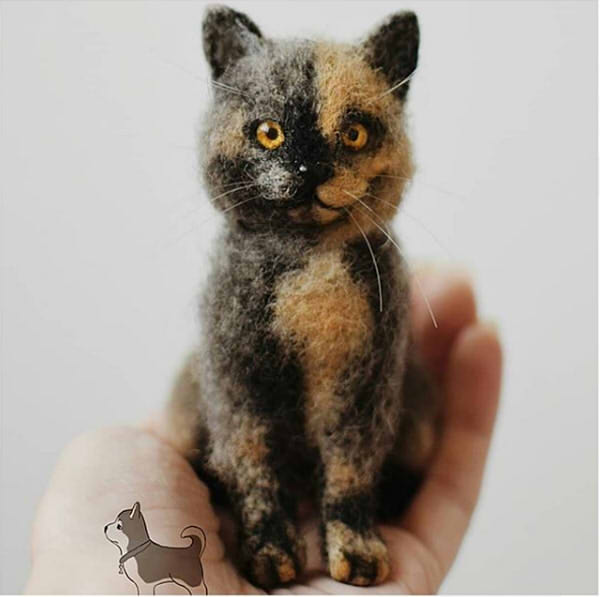 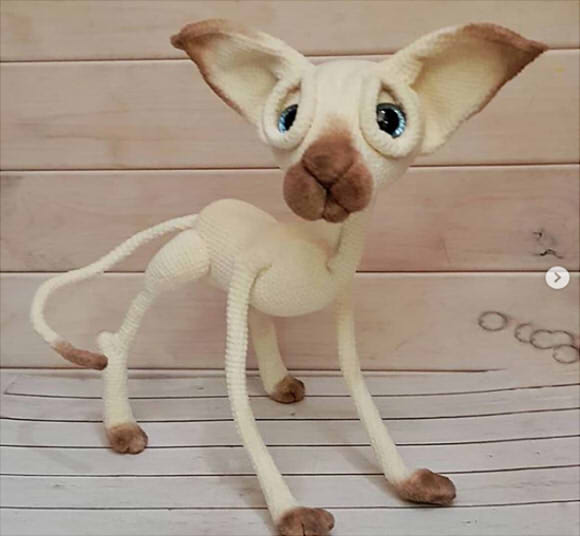 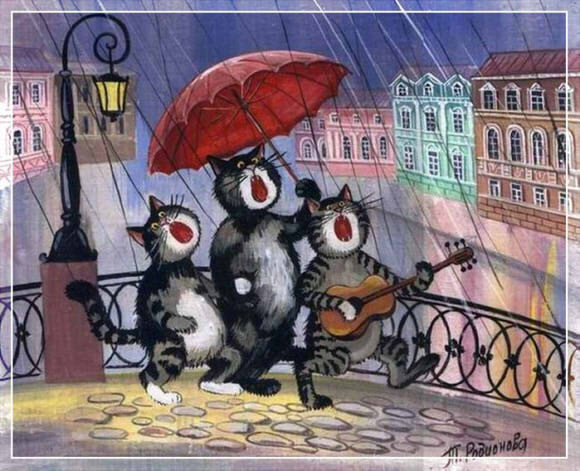 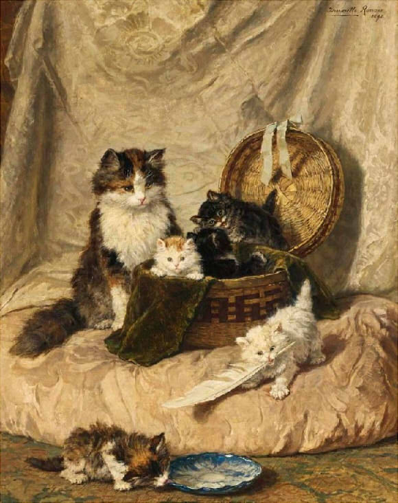 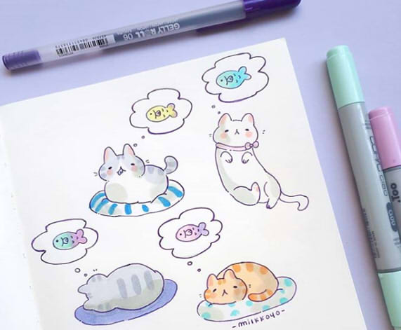 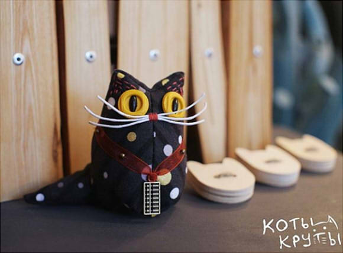 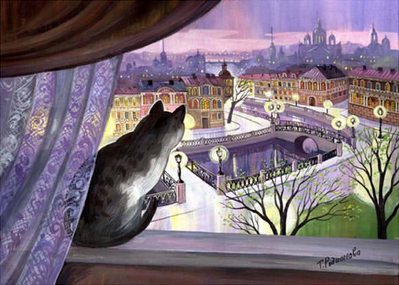 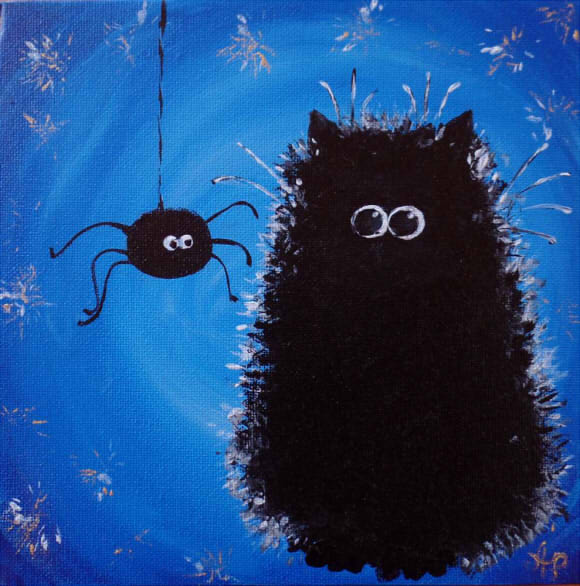 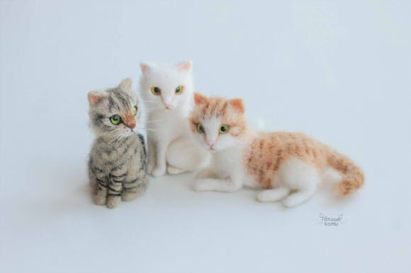 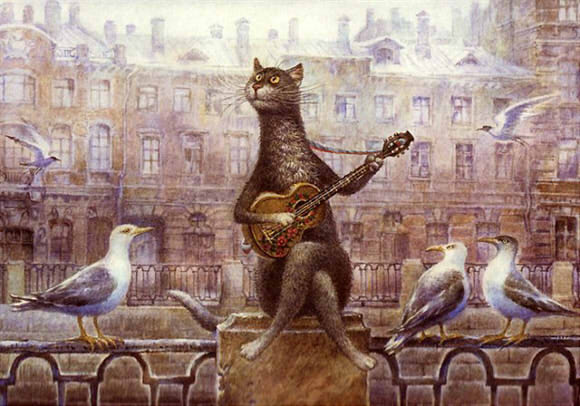 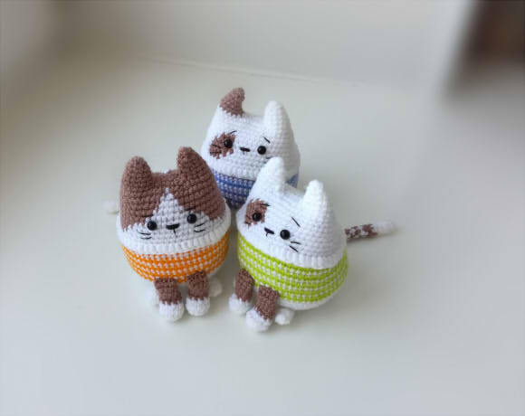 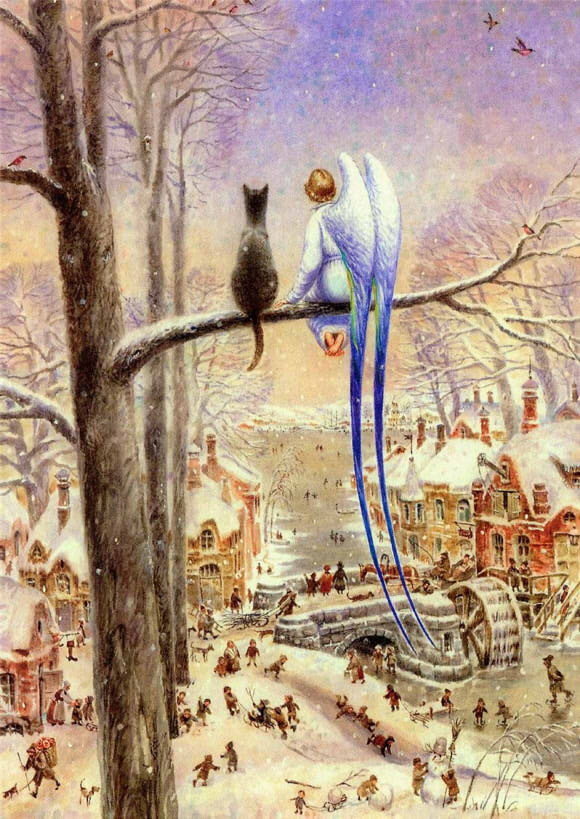 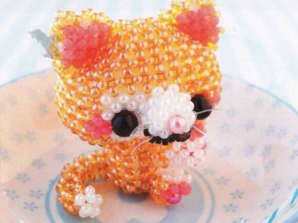 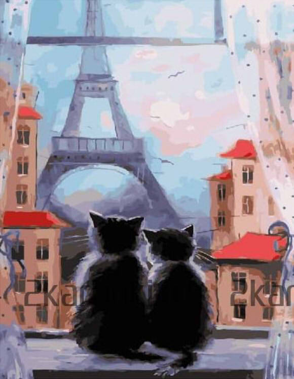 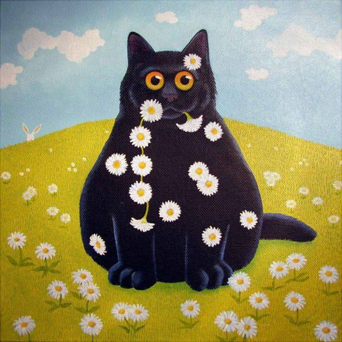